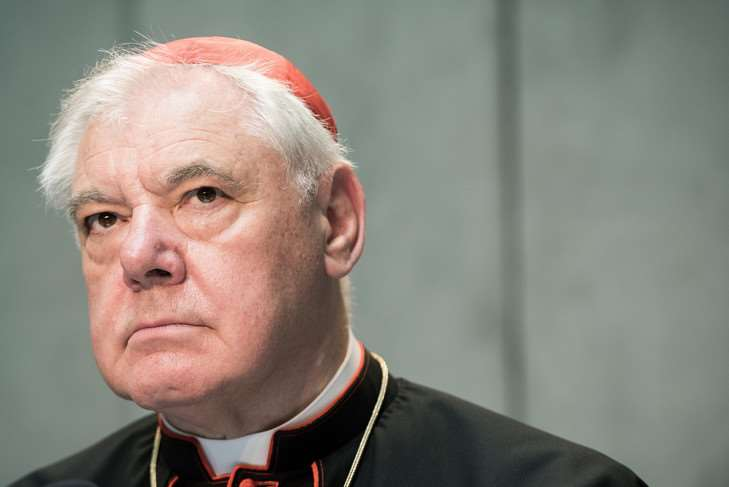

01/02/2017
Proposant sa propre interprétation de l’exhortation Amoris laetitia, le préfet de la Congrégation pour la doctrine de la foi attaque, sans les nommer, les textes des évêques de Malte et de la région de Buenos Aires, pourtant soutenus par le pape François.

préfet de la Congrégation pour la doctrine de la foi, met en garde contre les « interprétations confuses » de l’exhortation Amoris laetitia, notamment en ce qui concerne les divorcés remariés.
> LIRE AUSSI: Amoris laetitia, une nouvelle approche des divorcés remariés
« Amoris laetitia doit être clairement comprise à la lumière de toute la doctrine de l’Église », estime le gardien du dogme catholique selon qui les évêques ne doivent pas interpréter ce texte « en fonction de leur propre compréhension de l’enseignement du pape ».
« Il n’est pas possible d’aller au-delà des déclarations du magistère quand il s’agit de déclarations regardant la foi divine catholique révélée », précise le cardinal Müller, qui se concentre notamment sur les difficultés d’interprétations d’Amoris laetitia par rapport aux textes Veritatis splendor et Familiaris consortio de Jean-Paul II.
Ces textes avaient été invoqués par les quatre cardinaux frondeurs dans leurs « doutes » adressés au pape sur Amoris laetitia, et dont le cardinal Müller avait reçu une copie.
> LIRE AUSSI: Amoris laetitia, quatre cardinaux écrivent leurs « doutes » au pape
Selon le préfet de la Congrégation pour la doctrine de la foi, l’enseignement de Familiaris consortio sur le fait que les couples de divorcés remariés doivent vivre dans la continence pour accéder à l’eucharistie est toujours valable.
« C’est non seulement une loi positive de Jean-Paul II, mais qui exprime un élément constitutif de la théologie morale chrétienne et de la théologie des sacrements », insiste le cardinal Müller pour qui la « confusion » autour d’Amoris laetitia « concerne également la nonacceptation de l’encyclique Veritatis splendor et de sa claire doctrine du mal intrinsèque ».
« La tâche des évêques n’est pas de ne pas créer la confusion »
« Pour nous, le mariage est une expression de la participation à l’unité du Christ Époux et de son épouse l’Église, explique-t-il. Ce n’est pas, comme certains l’ont dit au cours du Synode, une simple et vague analogie. Non! Cela est la substance du sacrement, et aucune puissance dans le ciel et sur la terre, ni un ange, ni pape, ni un concile ou une loi des évêques, n’a le pouvoir de le changer. »
Une déclaration qui va néanmoins à rebours du texte même d’Amoris laetitia dans lequel le pape François souligne que « l’analogie entre le couple mari-femme et celui Christ-Église est une analogie imparfaite ».
> LIRE AUSSI: Amoris laetitia, un regard lucide sur le couple et la famille Dans son interview, le cardinal Müller rappelle également qu’« on ne peut pas dire qu’il y a des circonstances où l’adultère n’est pas un péché mortel » et met en garde contre « la casuistique qui peut facilement conduire à des malentendus ».
« La tâche des prêtres et des évêques n’est pas de créer la confusion, mais de rendre les choses claires », précise-t-il, soulignant la nécessité de « ne pas se référer à des petits passages d’Amoris laetitia » mais de « tout lire dans son ensemble afin de rendre plus attrayant pour les gens l’Évangile du mariage et de la famille ».
> LIRE AUSSI: L’accueil des divorcés dans l’Église avance à petit pas
« Ce n’est pas Amoris laetitia qui entraîne des interprétations confuses, mais certains de ses interprètes », conclut le cardinal.
Sans se rallier aux quatre cardinaux frondeurs, avec lesquels il avait pris ses distances, le gardien du dogme catholique se démarque pourtant aussi des interprétations du texte soutenues par le pape lui-même et le Saint-Siège.
> LIRE AUSSI: « Une correction fraternelle » du pape « n’est pas possible », affirme le cardinal Müller
Sans les citer explicitement, il critique en effet fermement les interprétations données par les évêques de la région de Buenos Aires – auxquels le pape avait pourtant répondu de sa main qu’« il n’y a pas d’autre interprétation » que la leur – ou par ceux de Malte – donnée officieusement en exemple par L’Osservatore romano, le quotidien du Saint-Siège.
> LIRE AUSSI: Le pape félicite des évêques argentins pour leur interprétation d’Amoris laetitia
> LIRE AUSSI : Les évêques de Malte permettent l’accès à l’eucharistie de divorcés remariés
Nicolas Senèze, à Rome
Repris du site La-Croix.com Mis en ligne sur le site Academia.edu par M. R. Macina, le 1er février 2017